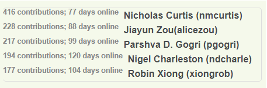

EECS 482 Fall 2020 Piazza Contributions

To demonstrate my understanding of the concepts and projects of EECS 482, I joined its Fall 2020 piazza to help the course staff with answering student questions. As of 12/4/2020, I made over 192 contributions. Over 35 of my answers have been endorsed by a course instructor. 6 of my followup comments have been endorsed by a course instructor. For sake of privacy, I remained anonymous; answers and counts can be verified by current instructors on Piazza's statistics page: 
Instructor Endorsed Answers
- @2718 FS_MAXFILENAME suggestion (P4) Endorsed by Harsha Madhyastha
- @2810 Test Case 18 (P4) Endorsed by Peter Chen
- @2399 Is the empty string a legal password? (P4) Endorsed by Peter Chen
- @2224 Careers Related to OS Development + Future Learning Endorsed by Peter Chen
- @2221 Downloading Boost Library On CAEN Endorsed by Peter Chen
- @2108 Clarification on Swap Block Assignment (P3) Endorsed by Peter Chen
- @1826 Incorrect Output Clarification (P3) Endorsed by Peter Chen
- @1689 Should Zero Pages be considered resident or clear? (P3) Endorsed by Peter Chen
- @1106 Problem Solving Sites for Concurrency Endorsed by Peter Chen
- @864 Thread Seg Faults (P2) Endorsed by Peter Chen
- @201 Is ++ atomic? (P1) Endorsed by Peter Chen
- @2407 How to Use RAII for Hand-over-hand Locking (P4) Endorsed by Brian Noble
- @203 Let GDB memorize "handle SIGUSR1 nostop noprint" (P1) Endorsed by Yilin Yang
- @752 Is the new operator safe for multithreaded code? (P2) Endorsed by Yilin Yang
- @1057 Lectures necessary for the Midterm (Exam) Endorsed by Yilin Yang
- @1064 Semaphore Implementation (Exam) Endorsed by Nathan Brown
- @369 Returning before calling cpu::boot (P1) Endorsed by Nathan Brown
- @368 Adivce for resolving incorrect disk scheduler output (P1) Endorsed by Nathan Brown
- @1721 vm_map: manipulating the bits of const char * filename (P3) Endorsed by Morgan Borjigin-Wang
- @886 Style Grading in regards to Assert Statements (P2) Endorsed by Morgan Borjigin-Wang
- @220 Valid Input Files (P1) Endorsed by Ryan Johnson
- @2274 createfs and showfs; what exactly is the login ID here? (P4) Endorsed by Austin Kiekintveld
- @1757 Real World Operating Systems (Related to P3, Linux Paging) Endorsed by Austin Kiekintveld
- @237 Using g++ 7.5 instead of 7.1 (Development Environment Question) Endorsed by Austin Kiekintveld
- @110 Private test cases (P1) Endorsed by Austin Kiekintveld
- @671 Calling cv.wait() on two different locks (P2) Endorsed by Brandon Kayes
- @1792 Clarifications on Swap File Functionality (P3) Endorsed by Audrey Ladd
- @2111 Filebacked eviction question (P3) Endorsed by Audrey Ladd
- @1787 "pager failed (output line XX)" meaning (P3) Endorsed by Yuxi Xie
- @1702 Storing pages into Physical Memory (P3) Endorsed by Yuxi Xie
- @1699 File block access order (P3) Endorsed by Yuxi Xie
- @1691 Clock Algorithm (P3) Endorsed by Yuxi Xie
- @2408 Is a non-zero session number in FS_SESSION valid? (P4) Endorsed by Joseph Nwabueze
- @167 max disk queue input (P1) Endorsed by Joseph Nwabueze
- @2456 size of encrypted message (P4) Endorsed by Joseph Nwabueze
Followup Comments Marked Good by Instructors
- @2261_f2 Acceptable filenames (P4) Marked good comment by Morgan Borjigin-Wang
- @83_f1 Comment asking about breaking requester ties (P1) Marked good comment by Peter Chen
- @1702_f1 Clarification on file_read, file_write function argument (P3) Marked good comment by Austin Kiekintveld
- @2293_f1 Clarified usage of disk_writeblock in the user interface (P4) Marked good comment by Austin Kiekintveld
- @2393_f1 Explained why the "recv" hangs (P4) Marked good comment by Austin Kiekintveld
- @2417_f1 Choosing a port for the file server. Marked good comment by Austin Kiekintveld
Enhanced Student Answers
I also made significant enhancements to the student answers to the following questions:
@2022 Anyone else been feeling stressed lately
The student (and many others) in this post was feeling stressed with project 3, and needed advice on how to alleviate it. I modified the student answer with the following response:
@186 What are the constraints on valid tracks?
I made the following addition to the answer: